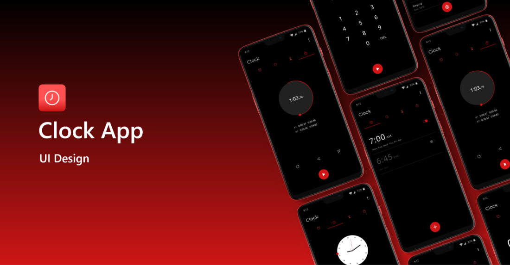
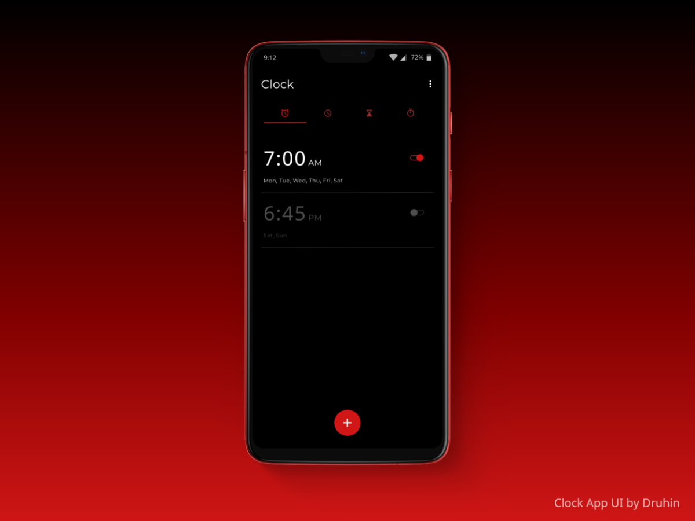
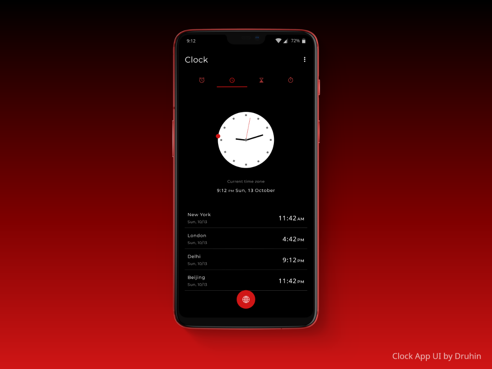
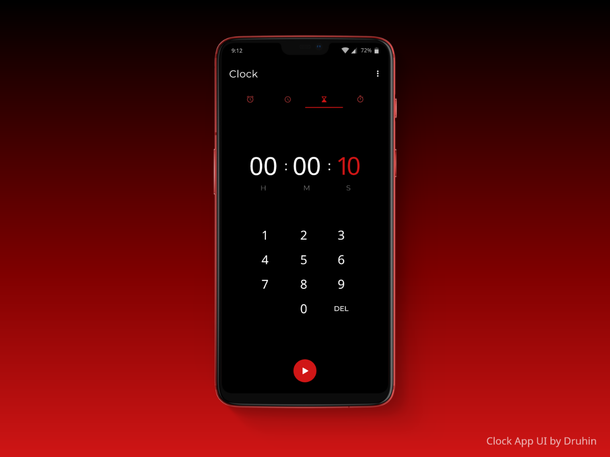
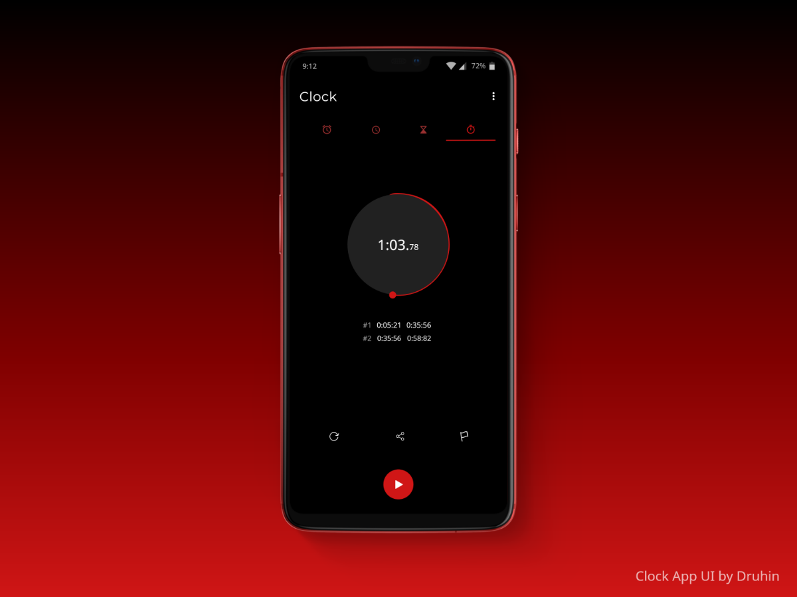

Clock App
Here are the UI designs, of a Minimal Clock App.
Consisting of 4 different screens

Screen 1

UI design of the Alarm Page of the Minimal Clock App.
Screen 2

UI design of the World Clock Page of the Minimal Clock App.
Screen 3

UI design of the Timer Page of the Minimal Clock App.
Screen 4

UI design of the Stopwatch Page of the Minimal Clock App.
Prototype
Go back to Projects